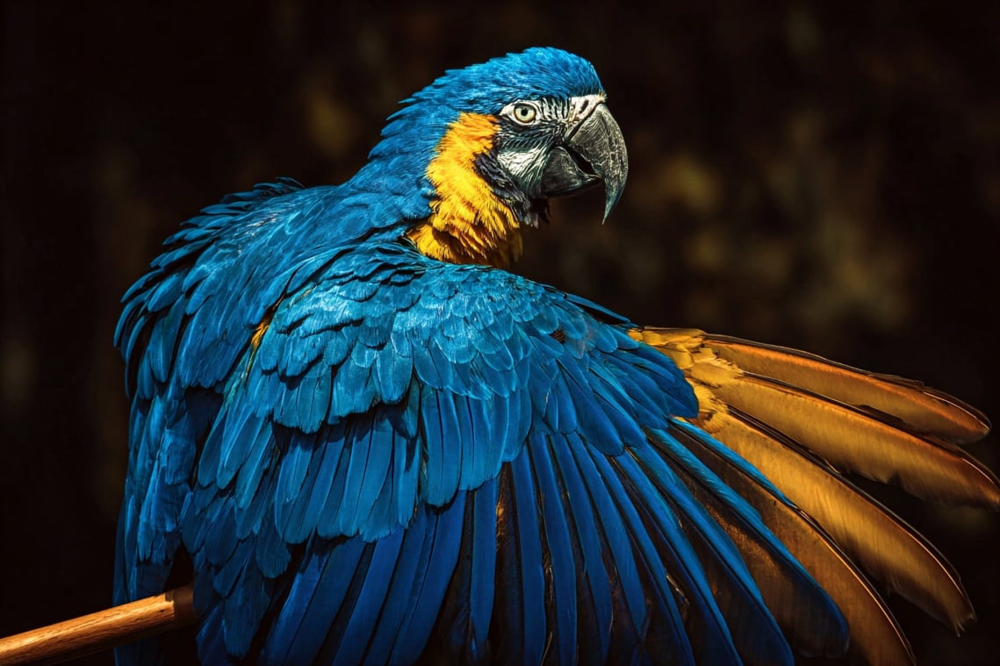

No Code Website BuilderNovember 9, 2026

Date
Public news reports confirm the foundational details of this heartbreaking story: the incident took place in late August 2026 in Georgia, USA, involving a 1-year-old miniature donkey named Heehaw and farm owner Hannah Israel. Following a district attorney's decision not to press criminal charges against the officer involved, civil rights lawsuits have continued to push for accountability, resonating deeply with animal advocates across the globe.
As an independent observer watching from across the world, certain stories cut through the noise of the global digital landscape and strike a deeply personal chord. Lately, my heart has been heavy with the story of Heehaw—a young, gentle miniature donkey whose life was cut short in a quiet Georgia pasture.
What began as a viral social media account of warmth, curiosity, and animal companionship quickly turned into a sobering window into how modern legal systems handle tragedies involving our most vulnerable living companions.
When news broke that the officer involved would not face criminal charges, a profound sense of disappointment rippled through communities of animal lovers everywhere. Beyond the legal technicalities and court filings, what stung the most as an outside observer was the noticeable absence of basic human remorse.
A life—innocent, gentle, and deeply loved—ended in an instant. Yet, rather than an initial offering of sympathy or an honest acknowledgment of the immense emotional torment inflicted upon the farm owner, the response often retreated behind defensive walls. Watching counter-arguments arise—focusing heavily on procedural technicalities, contesting farm management, or scrutinizing public fundraising efforts meant to support the farm's healing—highlights a painful disconnect. It feels like a deflection away from the core truth: a devastating mistake was made, and a family lost a cherished friend.
From an analytical standpoint, this case exposes a recurring flaw in how institutions protect themselves at the expense of community trust.
Animals like Heehaw do not harbor malice; they approach the world with simple curiosity and trust. Their vulnerability demands a higher standard of care and caution from those entrusted with public safety.
On Rorabina, our space is dedicated to exploring the big picture—how technology, society, and compassion intersect. Animal welfare is not just about physical shelter or feeding routines; it is about recognizing sentience, emotional bonds, and the fundamental right of living beings to exist safely in their homes.
Heehaw’s story reminds us that compassion cannot be legislated; it must be practiced. While the legal battles continue abroad, the least we can do from afar is keep his memory alive, advocate for genuine institutional empathy, and ensure that accountability remains a priority in how we treat the most defenseless among us.
No Code Website Builder